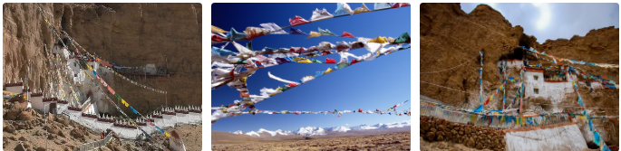

ОТДЫХ В ТИБЕТЕ
Тибет – познакомьтесь с «Колыбелью Мироздания»
Тибет – одна из самых больших загадок мира, самое высокое плато на Земле с самыми молодыми горами – Гималаями. Это красивейшее место, которое по легенде было морским дном, не сможет оставить равнодушным, даже самого искусного путешественника. Туры в Тибет – это незабываемые впечатления от присутствия в другом мире и чудеса, которых больше нигде не увидишь. Если Вы хотите осуществить свою мечту и отправиться на незабываемый отдых в Тибет, познакомиться с гостеприимными местными жителями и их необычными традициями, посетить огромное количество старинных монастырей и пещер. А также ощутить гармонию с природой, наслаждаясь невероятной красотой пышных лесов и высоких гор и, конечно же, собственными глазами увидеть волшебные озера, отражающие синеву неба.
Отдых в Тибете будет насыщен разнообразными событиями, так как здесь есть все необходимые условия, как для туристов отдающих предпочтение активному времяпровождению, так и для тех, кто стремится обрести гармонию души и тела вдали от цивилизации. Красотой этих необыкновенных мест, Вы будете поражены с самого первого взгляда, чего только стоит гора Эверест, которая является не только самой высокой точкой земного шара, но и своеобразным магнитом, постоянно притягивающих к себе альпинистов со всего мира. Озеро Мансаровар, которое часто называют озером живой воды. Здесь, на самом высоком в мире пресноводном озере, живут лебеди, а в окрестностях обитают сотни диких животных.
География
Тибет часто называют "Крышей Мира", что абсолютно справедливо. Тибетское плато является самым большим высокогорным плато на Земле. Средняя его высота - 5000метров над уровнем моря.
Площадь - 2.5 миллиона квадратных километров.
Население - 6 миллионов тибетцев и 7.5 миллионов китайцев
Тибет покрывает общую площадь 4,71,900 квадратных миль. 2,600 км простирается с запада на восток и 1,300 с севера на юг. Он простирается от градусов 78 до градусов 90 долготы на восток и от градусов 28 до широты 37-градуса на север. Тибетские ландшафты варьируются от густых зеленых лесов до сухих лунных ландшафтов и пустынь, от глубоких речных каньонов до самых высоких горных цепей. Здесь есть обширные луга, одни из важнейших рек, протекающих по всей Азии, альпийские озера и ледники. Из-за такого разнообразия климата Тибет является домом для многих видов диких животных, в том числе некоторых эндемичных животных и птиц.
Главные достопримечательности
Дворец Потала, расположенный на Красной горе в городе Лхаса – столице региона Выглядит так, будто сама гора стряхнула с себя снега и превратилась в потрясающе красивый дворец. Высота 13-этажного здания составляет 115 метров, а общая площадь всех помещений превышает 130 тысяч квадратных метров. Посещая дворец Потала, будьте готовы увидеть всю роскошь и великолепие этого удивительного сооружения, но учитывайте то, что все комнаты посетить не удастся из-за огромной площади комплекса.
Гьянгдзе – город, расположившийся неподалеку от столицы Его особенность кроется в сохранившейся здесь тибетской атмосфере. Третий по величине город Тибета позже всех подвергся влиянию Китая, поэтому изучить все национальные особенности региона можно именно здесь.
Норбулинка – прекрасный комплекс с дворцом и парком, летняя резиденция Далай-лам. За прогулками, раздумьями и медитациями путешественники устремляются как раз сюда. На территории парка также расположены искусственное озеро и зоопарк.
Храм Джоканг – основной центр паломничества буддистов. Здесь находится знаменитая тибетская реликвия – статуя Будды Шакьямуни.
Волшебное озеро Ямдрок, которое располагается высоко в горах и привлекает путешественников своей удивительной красотой и мистическими историями. Озеро меняет свой цвет в зависимости от времени года и погоды, поэтому увидеть его одинаковым дважды Вам вряд ли удастся.
Гора Кайлас – священная гора Тибета, почитаемая буддистами и индуистами всего мира. Отправляясь сюда, обязательно загадайте желание.
Климат
Характеристики климата Плато - большая разница в разных высотах, днях и ночах. Северная часть засушливая и холодная. В целом, Тибет представляет собой низкотемпературный, долгодневный солнечный свет, сильное излучение, редкие осадки и тонкий воздух.
Пасторальная область Тибета является одной из пяти крупнейших в Китае, в которой пасут овец, козлов и яков. Сельскохозяйственными культурами являются в основном семена ячменя, пшеницы, бобов и рапса, а также некоторые яблоки и грецкие орехи. Тибет имеет лесное покрытие 60,000 квадратных километров, что является вторым по величине месторождением древесины в Китае. Известные дорогие лекарственные средства для животных и трав, такие как мускус, рогатый рог, желчный пузырь медведя, тибетский гусеничный гриб, клубень с повышенной гастродианией, луковица фритлярий и цветок лотоса снега, известны во всем мире. Потенциалы гидроэлектрической и геотермальной энергетики находятся на вершине резервов округа; солнечная энергия - вторая.
Кухня и особенности быта
Основа тибетской кухни – овощи и мясо. Среди специй и пряностей – лишь соль, чеснок и лук. Главные блюда, которые стоит попробовать: сосиски из баранины, вяленое мясо яков, момо – аналог пельменей, тукпа – суп с лапшой, мясом, а также овощами, чай, который готовят с добавлением масла и соли.
Культура
Тибетская культура возникла из Тибета. Человеческая деятельность восходит к поздним эпохам палеолита. Царь Тибета, Сонгцен Гампо, объединенный Тибет в X XIXX веке н.э. и основал династию Тибета, которая дважды сплела матринониальные отношения с династией Тан в 7th и XNXXX вв. В XIVXX веке Тибет стал административным регионом правительства Гаден-подан, который был создан во время правления пятого Далай-ламы, и это было подтверждено правительством династии Цин, которому был разрешен постоянный министр Тибета. После революции 7 в Тибете были созданы административные органы правительства Китайской Народной Республики.
Фестивали
Тибетский календарь следует за фазами Луны. Поэтому даты проведения фестивалей по западному календарю будут отличаться каждый год. Большинство важных фестивалей в Тибете религиозны. Это самые важные фестивали для тибетцев:
Фестиваль Лозар или Новый год
Он начинается в первый день первого месяца и длится в течение дней 3-7. Тибетцы любят этот праздник, так как они всегда отмечают его со своей семьей. Они готовятся к Лосару заранее, все убирают и готовят специальные блюда. Когда наступает день, они просыпаются рано, чтобы одеться в традиционные костюмы, хорошо покушать с семьей, расслабиться и насладиться днем. В течение нескольких дней после Лосара они будут посещать родственников и друзей, чтобы предложить друг другу вкусные блюда.
Фестиваль Сага Дава (15-й день 4-го месяца)
Это самый важный религиозный праздник в Тибете. Сага Дава отмечает день рождения Будды, просветления и смерти. Некоторые монастыри готовят специальный танец чам, и монахи демонстрируют его во время фестиваля. Кроме того, он широко отмечается у подножия горы Кайлаш - важного места паломничества.
Фестиваль Shoton
Тибетцы отмечают Шотон или фестиваль йогурта в 30-й день 6-го месяца. Обычно выпадает в августе. История фестиваля восходит к 17-му веку, когда тибетцы начали подавать йогурт монахам, празднуя завершение длинных ретритов. Во время Шотона большие монастыри показывают огромные картины Тханки. Вы можете видеть эти картины только один раз в год во время этого фестиваля. В это же время труппы артистов исполняют оперу в парке Норбулингка в Лхасе. Тибетцы собираются с семьями на пикник в парке.